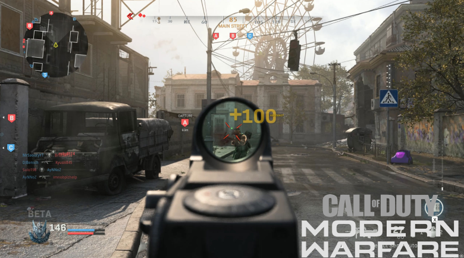
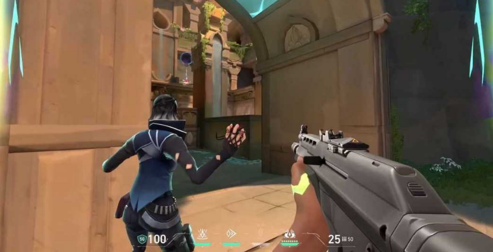
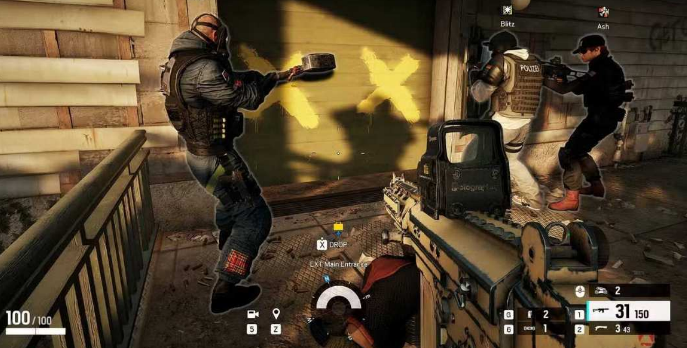

First‐person Shooter
First Person Shooters are games where you look through the eyes of your character. In these games you have guns or bows and you have to shoot enemies, often other players.
These games have different gamemodes, such as:
-
A team game. You have to work together with your team to defeat the other team.
-
Campaign. This is the story of the games. Not all First Person Games have a campaign. In this gamemode you often play solo and must fight NPC’s (non‐player characters) to progress the story.
-
Free For All. In this gamemode you fight against other players, but you don’t fight with a team. Instead you fight alone against all the other plays, a free for all.
These games are action‐pact with a high skill ceiling.
Here is the list of FPS games:

Call of Duty: Modern Warfare
PC, PS4 and Xbox One
Call of Duty: Modern Warfare is an amazing first-person shooter that redefines the series through amazing gunplay, photorealistic graphics, beautiful sound design, and an intense, memorable campaign. A true shooter masterpiece.
I had an amazing time playing through the campaign and I keep playing the multiplayer for hours at a time. The multiplayer lacks a bit of balance, but it is a fun game mode.
I recommend this game to anyone who enjoys action‐heavy games.
The first ever first‐person shooter was made in 1973 and was named: Maze War. It was made by high school students Steve Colley, Greg Thompson, and Howard Palmer at the NASA Ames Research Center.

Valorant
PC, PS5 and Xbox Series X|S
Valorant is an amazing first-person shooter. It combines precise gunplay and with the agent abilities. This game requires a lot of teamwork, strategy, and good aim to win the rounds.
The colorful art style and the large roster of agents make every match feel unique and interesting. Although the learning curve is very steep because of the precise gunplay and teamwork, the competitive gameplay is very rewarding.
Overall, Valorant is a fun and replayable game that i would recommend to anyone searching for a refreshing FPS game.
Battlezone (1980) was an arcade tank game that used vector graphics to render a 3D perspective, making it the first commercially successful first‐person shooter.

Rainbow Six Siege
PC, PS and Xbox
Rainbow Six Siege is an excellent first-person shooter that focuses on teamwork, strategy, and realistic gunplay. With destructible environments and a wide selection of operators make every match fun and interesting.
The game rewards you for planning and communicating with your team, creating intense and satisfying matches. Although the game can be difficult for beginners to learn, master the mechanics is very rewarding.
The game is a challenging but very enjoyable game that offers unique experiences compared to other shooters.